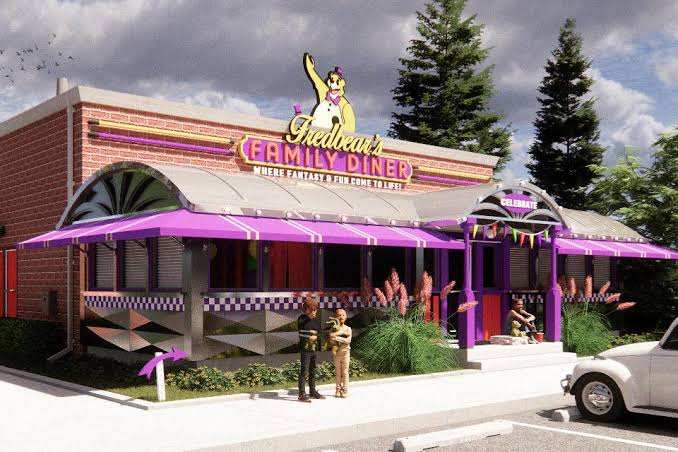
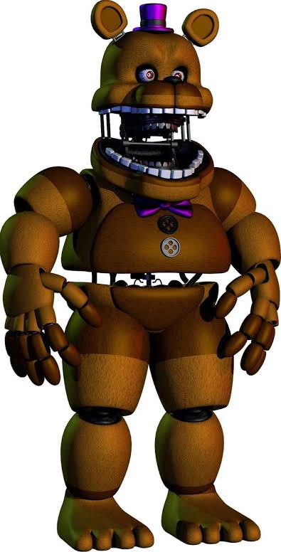
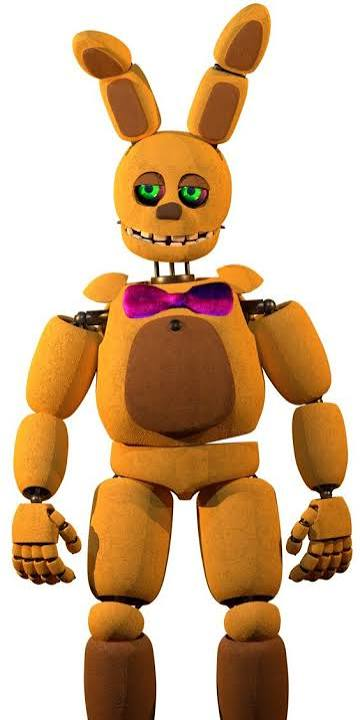
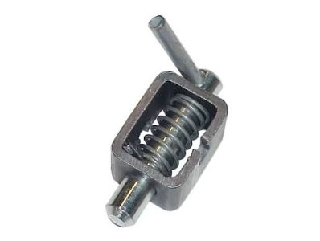
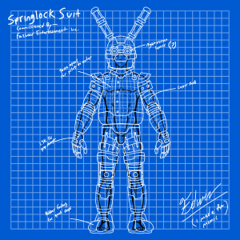
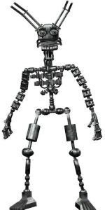

O período compreendido entre 1970 e 1982 representa a gênese do que hoje conhecemos como a Fazbear Entertainment. Foi uma era marcada pelo pioneirismo no setor de alimentação e entretenimento familiar combinado, estabelecendo as bases para a indústria de restaurantes temáticos. A transição da pequena operação regional da Fredbear's Family Diner para os estágios iniciais de expansão corporativa demonstrou a viabilidade de unir culinária acessível com performances artísticas mecânicas automatizadas. Este capítulo do memorial preserva os registros da transição analógica e o nascimento dos nossos primeiros ícones proprietários.
VISÃO GERAL DA ÉPOCA

O CONCEITO ORIGINAL: FREDBEAR'S FAMILY DINER


1. FREDBEAR
Designação Técnica: Unidade Híbrida Primária – Modelo 01
Função Operacional: Vocalista Principal, Mestre de Cerimônias
e Mascote Oficial
Descrição de Design e Estética
O modelo original do Fredbear foi projetado
para transmitir uma presença imponente, porém acolhedora.
Construído com uma estrutura robusta de pelúcia sintética texturizada em tom
amarelo-ouro (característica da paleta de cores original da Fredbear's Family Diner),
o personagem trazia como marcas registradas uma cartola e uma gravata-borboleta em tom
roxo-escuro vibrante. Seu design facial apresentava mandíbulas articuladas proeminentes
com dentes quadrados e rombudos, projetados especificamente para simular o movimento de
anto sincopado através de cilindros pneumáticos internos.
Especificações Mecânicas e Integração Híbrida Como o primeiro protótipo funcional da tecnologia Springlock, o Fredbear possuía um endosqueleto de liga ferrosa de alta densidade. No modo autônomo, sua programação era limitada a rotinas simples de palco: oscilação lateral de tronco, saudações com o braço direito e sincronização labial básica com as faixas de áudio pré-gravadas em fitas de rolo. No modo traje, os componentes mecatrônicos eram comprimidos contra o perímetro interno da carcaça por meio de trinta e duas travas de mola concêntricas, exigindo uma técnica rigorosa de respiração e postura por parte do operador humano para evitar o desengate acidental dos circuitos internos.
Nota do Arquivista: Relatórios técnicos da época mencionam que o sistema de mandíbula do Fredbear possuía uma força de pressão estática considerável, necessária para suportar o peso do crânio de fibra de vidro. O memorial esclarece que todas as travas de segurança bucais foram revisadas após a descontinuação do modelo, tornando infundados os mitos urbanos regionais sobre falhas estruturais catastróficas por esmagamento durante interações com o público.
2.SPRING BONNIE
Designação Técnica: Unidade Híbrida Secundária – Modelo 02
Função Operacional: Instrumentista (Guitarra/Baixo) e Entretenimento de Salão
Descrição de Design e Estética
Desenvolvido para atuar como o contraponto dinâmico no palco, o Spring Bonnie apresentava uma silhueta ligeiramente mais esguia e ágil que a do vocalista principal. Sua pelúcia, compartilhando o mesmo tom amarelo-ouro característico da primeira geração, contava com detalhes em relevo mais claro na região abdominal e na parte interna de suas longas orelhas articuladas. Diferente dos modelos posteriores de coelhos da marca, o Spring Bonnie original possuía olhos verdes estáticos de acrílico e um sorriso fixo e permanente, projetado para manter a atmosfera festiva mesmo quando o circuito estivesse desligado.
Especificações Mecânicas e Integração Híbrida
O Spring Bonnie foi projetado com um foco maior na mobilidade de salão. No modo autônomo, seus servomotores permitiam uma movimentação mais suave dos dedos e braços para simular o dedilhar de um instrumento musical cenográfico. No modo traje, ele era o modelo preferido para interações diretas e caminhadas pelo restaurante devido ao seu peso ligeiramente reduzido em comparação ao Fredbear. No entanto, o posicionamento das travas de mola na região torácica e dorsal era extremamente denso, o que reduzia a ventilação interna e exigia que os funcionários limitassem suas sessões de atuação a períodos curtos para evitar o acúmulo de umidade.
Nota do Arquivista: O modelo físico original do Spring Bonnie foi permanentemente retirado de circulação e transferido para os depósitos centrais de segurança da empresa após o encerramento das atividades da Diner. Arquivos digitais sobre sua desmontagem final estão restritos. O memorial reitera que quaisquer alegações sobre o avistamento desta estrutura operando de forma autônoma em salas desativadas ou áreas de armazenamento trancadas são subprodutos de ilusões ópticas causadas pela baixa iluminação dos ambientes de arquivo.
DESENVOLVIMENTO TÉCNICO: A TECNOLOGIA DE TRAJES HÍBRIDOS (SPRINGLOCKS)
O grande diferencial competitivo da empresa nesta época foi o desenvolvimento de uma engenharia patenteada revolucionária: os sistemas de trajes híbridos de dupla função, popularmente conhecidos no meio técnico como Mecanismos de Trava de Mola (Springlocks). Essa tecnologia permitia que uma única estrutura operasse em dois modos distintos:
Modo Animatrônico: Onde o endosqueleto interno se movia de forma autônoma através de comandos pneumáticos primitivos
e cabos de aço
Modo Traje: Onde o endosqueleto era comprimido e fixado contra as paredes internas da fantasia por
meio de travas de mola de alta pressão, liberando espaço interno para que um funcionário humano treinado pudesse vestir e
operar a atração manualmente.
Nota do Arquivista: Os diagramas e manuais de operação desta seção são exibidos estritamente para fins de preservação histórica. Devido ao peso excessivo das estruturas metálicas e à sensibilidade mecânica extrema das travas originais a fatores como umidade corporal ou movimentos bruscos, a replicação ou fabricação caseira desses mecanismos é estritamente proibida por leis federais de segurança.
BLUEPRINTS:



MATERIAL PROMOCIONAL


Depoimento de Henry Emily (arquivo do Memorial Fazbear, c. 1978)
"Quando começamos, tudo o que queríamos era criar um lugar onde famílias pudessem passar algum tempo juntas e sair com um sorriso no rosto. Não tínhamos grandes planos de expansão nem sonhos de fama; apenas acreditávamos que entretenimento e imaginação podiam aproximar as pessoas.
Ver crianças correndo pelos corredores, rindo das apresentações e criando memórias ao lado de seus pais sempre foi a maior recompensa pelo nosso trabalho. Cada personagem, cada palco e cada detalhe foi construído com dedicação, na esperança de oferecer algo especial para a comunidade.
Tenho orgulho de todos que ajudaram a transformar essa ideia em realidade. Técnicos, artistas, funcionários e parceiros contribuíram para tornar este projeto mais do que um negócio: uma tradição para muitas famílias.
Espero que as futuras gerações continuem encontrando alegria nestes lugares e que nunca esqueçam que tudo começou com uma simples vontade de fazer as pessoas felizes."